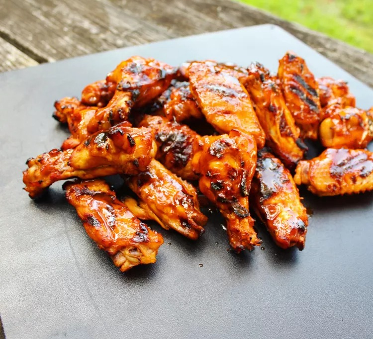

Go back homepage
Buffalo Wings

These grilled buffalo wings taste so much better than fried!
Ingredients
- 3 pounds chicken wings, separated at joints, tips discarded
- 1 cup Louisiana-style hot sauce
- (12 fluid ounce) can or bottle cola-flavored carbonated beverage
- 1/4 teaspoon cayenne pepper back pepper, or to taste
- 1 tablespoon soy sauce
Directions
- Preheat a grill to medium heat.
- Mix hot sauce, cola, cayenne pepper, black pepper and soy sauce together
in a large pot; add wings to the sauce. Place the pot on one side of the preheated grill; bring to a simmer.
- use tongs to transfer wings out of sauce and place on the preheated grill; cook until lightly charred on both
sides, about 8 to 10 minutes, the return wings to the sauce to continue cooking. Repeat this process until chicken
is hot and thickened, about 50 minutes. You can serve them as sloppy-style wings, or serve right off the grill for
dryer wings.